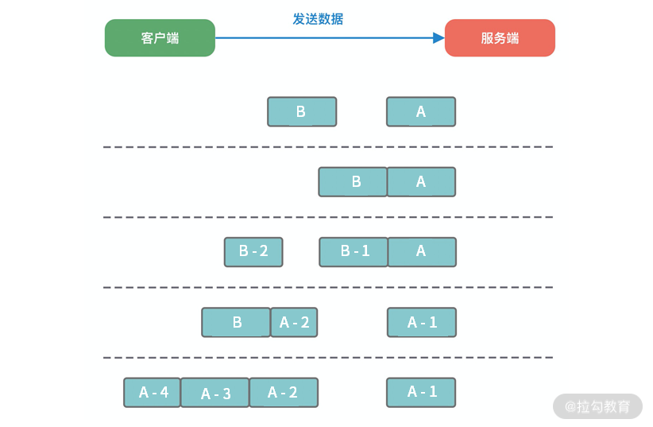

- 00 学好 Netty，是你修炼 Java 内功的必经之路.md.html
- 01 初识 Netty：为什么 Netty 这么流行？.md.html
- 02 纵览全局：把握 Netty 整体架构脉络.md.html
- 03 引导器作用：客户端和服务端启动都要做些什么？.md.html
- 04 事件调度层：为什么 EventLoop 是 Netty 的精髓？.md.html
- 05 服务编排层：Pipeline 如何协调各类 Handler ？.md.html
- 06 粘包拆包问题：如何获取一个完整的网络包？.md.html
- 07 接头暗语：如何利用 Netty 实现自定义协议通信？.md.html
- 08 开箱即用：Netty 支持哪些常用的解码器？.md.html
- 09 数据传输：writeAndFlush 处理流程剖析.md.html
- 10 双刃剑：合理管理 Netty 堆外内存.md.html
- 11 另起炉灶：Netty 数据传输载体 ByteBuf 详解.md.html
- 12 他山之石：高性能内存分配器 jemalloc 基本原理.md.html
- 13 举一反三：Netty 高性能内存管理设计（上）.md.html
- 14 举一反三：Netty 高性能内存管理设计（下）.md.html
- 15 轻量级对象回收站：Recycler 对象池技术解析.md.html
- 16 IO 加速：与众不同的 Netty 零拷贝技术.md.html
- 17 源码篇：从 Linux 出发深入剖析服务端启动流程.md.html
- 18 源码篇：解密 Netty Reactor 线程模型.md.html
- 19 源码篇：一个网络请求在 Netty 中的旅程.md.html
- 20 技巧篇：Netty 的 FastThreadLocal 究竟比 ThreadLocal 快在哪儿？.md.html
- 21 技巧篇：延迟任务处理神器之时间轮 HashedWheelTimer.md.html
- 22 技巧篇：高性能无锁队列 Mpsc Queue.md.html
- 23 架构设计：如何实现一个高性能分布式 RPC 框架.md.html
- 24 服务发布与订阅：搭建生产者和消费者的基础框架.md.html
- 25 远程通信：通信协议设计以及编解码的实现.md.html
- 26 服务治理：服务发现与负载均衡机制的实现.md.html
- 27 动态代理：为用户屏蔽 RPC 调用的底层细节.md.html
- 28 实战总结：RPC 实战总结与进阶延伸.md.html
- 29 编程思想：Netty 中应用了哪些设计模式？.md.html
- 30 实践总结：Netty 在项目开发中的一些最佳实践.md.html
- 31 结束语 技术成长之路：如何打造自己的技术体系.md.html
- 捐赠
06 粘包拆包问题：如何获取一个完整的网络包？
本节课开始我们将学习 Netty 通信过程中的编解码技术。编解码技术这是实现网络通信的基础，让我们可以定义任何满足业务需求的应用层协议。在网络编程中，我们经常会使用各种网络传输协议，其中 TCP 是最常用的协议。我们首先需要了解的是 TCP 最基本的拆包/粘包问题以及常用的解决方案，才能更好地理解 Netty 的编解码框架。
为什么有拆包/粘包
TCP 传输协议是面向流的，没有数据包界限。客户端向服务端发送数据时，可能将一个完整的报文拆分成多个小报文进行发送，也可能将多个报文合并成一个大的报文进行发送。因此就有了拆包和粘包。
为什么会出现拆包/粘包现象呢？在网络通信的过程中，每次可以发送的数据包大小是受多种因素限制的，如 MTU 传输单元大小、MSS 最大分段大小、滑动窗口等。如果一次传输的网络包数据大小超过传输单元大小，那么我们的数据可能会拆分为多个数据包发送出去。如果每次请求的网络包数据都很小，一共请求了 10000 次，TCP 并不会分别发送 10000 次。因为 TCP 采用的 Nagle 算法对此作出了优化。如果你是一位网络新手，可能对这些概念并不非常清楚。那我们先了解下计算机网络中 MTU、MSS、Nagle 这些基础概念以及它们为什么会造成拆包/粘包问题。
MTU 最大传输单元和 MSS 最大分段大小
MTU（Maxitum Transmission Unit） 是链路层一次最大传输数据的大小。MTU 一般来说大小为 1500 byte。MSS（Maximum Segement Size） 是指 TCP 最大报文段长度，它是传输层一次发送最大数据的大小。如下图所示，MTU 和 MSS 一般的计算关系为：MSS = MTU - IP 首部 - TCP首部，如果 MSS + TCP 首部 + IP 首部 > MTU，那么数据包将会被拆分为多个发送。这就是拆包现象。

滑动窗口
滑动窗口是 TCP 传输层用于流量控制的一种有效措施，也被称为通告窗口。滑动窗口是数据接收方设置的窗口大小，随后接收方会把窗口大小告诉发送方，以此限制发送方每次发送数据的大小，从而达到流量控制的目的。这样数据发送方不需要每发送一组数据就阻塞等待接收方确认，允许发送方同时发送多个数据分组，每次发送的数据都会被限制在窗口大小内。由此可见，滑动窗口可以大幅度提升网络吞吐量。
那么 TCP 报文是怎么确保数据包按次序到达且不丢数据呢？首先，所有的数据帧都是有编号的，TCP 并不会为每个报文段都回复 ACK 响应，它会对多个报文段回复一次 ACK。假设有三个报文段 A、B、C，发送方先发送了B、C，接收方则必须等待 A 报文段到达，如果一定时间内仍未等到 A 报文段，那么 B、C 也会被丢弃，发送方会发起重试。如果已接收到 A 报文段，那么将会回复发送方一次 ACK 确认。
Nagle 算法
Nagle 算法于 1984 年被福特航空和通信公司定义为 TCP/IP 拥塞控制方法。它主要用于解决频繁发送小数据包而带来的网络拥塞问题。试想如果每次需要发送的数据只有 1 字节，加上 20 个字节 IP Header 和 20 个字节 TCP Header，每次发送的数据包大小为 41 字节，但是只有 1 字节是有效信息，这就造成了非常大的浪费。Nagle 算法可以理解为批量发送，也是我们平时编程中经常用到的优化思路，它是在数据未得到确认之前先写入缓冲区，等待数据确认或者缓冲区积攒到一定大小再把数据包发送出去。
Linux 在默认情况下是开启 Nagle 算法的，在大量小数据包的场景下可以有效地降低网络开销。但如果你的业务场景每次发送的数据都需要获得及时响应，那么 Nagle 算法就不能满足你的需求了，因为 Nagle 算法会有一定的数据延迟。你可以通过 Linux 提供的 TCP_NODELAY 参数禁用 Nagle 算法。Netty 中为了使数据传输延迟最小化，就默认禁用了 Nagle 算法，这一点与 Linux 操作系统的默认行为是相反的。
拆包/粘包的解决方案

在客户端和服务端通信的过程中，服务端一次读到的数据大小是不确定的。如上图所示，拆包/粘包可能会出现以下五种情况：
- 服务端恰巧读到了两个完整的数据包 A 和 B，没有出现拆包/粘包问题；
- 服务端接收到 A 和 B 粘在一起的数据包，服务端需要解析出 A 和 B；
- 服务端收到完整的 A 和 B 的一部分数据包 B-1，服务端需要解析出完整的 A，并等待读取完整的 B 数据包；
- 服务端接收到 A 的一部分数据包 A-1，此时需要等待接收到完整的 A 数据包；
- 数据包 A 较大，服务端需要多次才可以接收完数据包 A。
由于拆包/粘包问题的存在，数据接收方很难界定数据包的边界在哪里，很难识别出一个完整的数据包。所以需要提供一种机制来识别数据包的界限，这也是解决拆包/粘包的唯一方法：定义应用层的通信协议。下面我们一起看下主流协议的解决方案。
消息长度固定
每个数据报文都需要一个固定的长度。当接收方累计读取到固定长度的报文后，就认为已经获得一个完整的消息。当发送方的数据小于固定长度时，则需要空位补齐。
+----+------+------+---+----+
| AB | CDEF | GHIJ | K | LM |
+----+------+------+---+----+
假设我们的固定长度为 4 字节，那么如上所示的 5 条数据一共需要发送 4 个报文：
+------+------+------+------+
| ABCD | EFGH | IJKL | M000 |
+------+------+------+------+
消息定长法使用非常简单，但是缺点也非常明显，无法很好设定固定长度的值，如果长度太大会造成字节浪费，长度太小又会影响消息传输，所以在一般情况下消息定长法不会被采用。
特定分隔符
既然接收方无法区分消息的边界，那么我们可以在每次发送报文的尾部加上特定分隔符，接收方就可以根据特殊分隔符进行消息拆分。以下报文根据特定分隔符 \n 按行解析，即可得到 AB、CDEF、GHIJ、K、LM 五条原始报文。
+-------------------------+
| AB\nCDEF\nGHIJ\nK\nLM\n |
+-------------------------+
由于在发送报文时尾部需要添加特定分隔符，所以对于分隔符的选择一定要避免和消息体中字符相同，以免冲突。否则可能出现错误的消息拆分。比较推荐的做法是将消息进行编码，例如 base64 编码，然后可以选择 64 个编码字符之外的字符作为特定分隔符。特定分隔符法在消息协议足够简单的场景下比较高效，例如大名鼎鼎的 Redis 在通信过程中采用的就是换行分隔符。
消息长度 + 消息内容
消息头 消息体
+--------+----------+
| Length | Content |
+--------+----------+
消息长度 + 消息内容是项目开发中最常用的一种协议，如上展示了该协议的基本格式。消息头中存放消息的总长度，例如使用 4 字节的 int 值记录消息的长度，消息体实际的二进制的字节数据。接收方在解析数据时，首先读取消息头的长度字段 Len，然后紧接着读取长度为 Len 的字节数据，该数据即判定为一个完整的数据报文。依然以上述提到的原始字节数据为例，使用该协议进行编码后的结果如下所示：
+-----+-------+-------+----+-----+
| 2AB | 4CDEF | 4GHIJ | 1K | 2LM |
+-----+-------+-------+----+-----+
消息长度 + 消息内容的使用方式非常灵活，且不会存在消息定长法和特定分隔符法的明显缺陷。当然在消息头中不仅只限于存放消息的长度，而且可以自定义其他必要的扩展字段，例如消息版本、算法类型等。
总结
本节课我们详细讨论了 TCP 中的拆包/粘包问题，以及如何通过应用层的通信协议来解决拆包/粘包问题。其中基于消息长度 + 消息内容的变长协议是项目开发中最常用的一种方法，需要我们重点掌握，例如开源中间件 Dubbo、RocketMQ 等都基于该方法自定义了自己的通信协议，下节课我们将一起学习如何设计高效、可扩展、易维护的自定义网络通信协议。
© 2019 - 2023 Liangliang Lee. Powered by gin and hexo-theme-book.